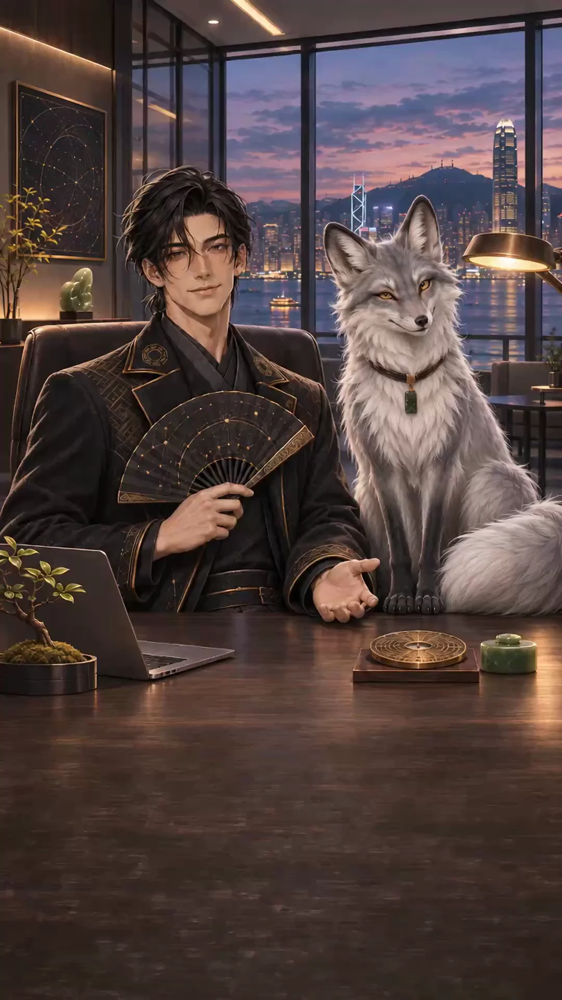

玄與九爺

免費試排紫微斗數
用虛構資料睇十二宮，唔使登入。
入室須知
會唔會預測我一定發生乜事？
唔會。只作傳統文化閱讀與生活反思；宮位及星曜有列出依據，唔代替醫療、投資或其他專業意見。
資料會保存或傳送嗎？
排盤只留本頁，關閉或重新整理便清除。現階段只用虛構資料，手記用化名，唔需要真名、電郵或詳細地址。
要等首頁動畫播完先可以入室嗎？
唔使。隨時按下方牌匾就可以入室。裝置開啟「減少動態」會用靜態畫面。
免費可以睇到啲乜？
一張十二宮命盤，仲有事業、愛情、家庭、財運、未來方向五個話題嘅基礎閱讀。揀事業或愛情，玄會用你填嘅虛構生辰起盤，再揭開免費六格手記。有嘢想問就寫低，唔寫都睇得。唔使登入或付款，唔包括流年預測或完整論命。